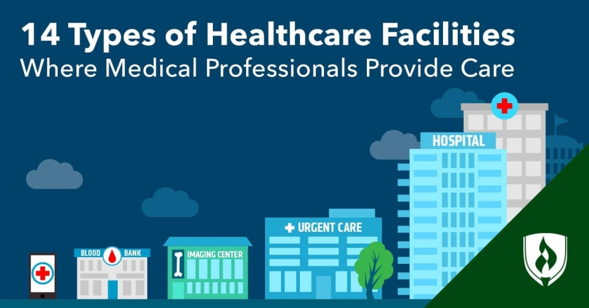

01
Notice
Pay attention when something feels, looks, or behaves differently from what is normal for you or someone around you.
PAGE 09 · PERSONAL CARE & PREVENTION
Knowing when you need help is part of taking care of yourself — and caring for others.
WHY THIS MATTERS
Sometimes a health concern can be managed with ordinary self-care. Sometimes you need advice from a trusted adult or health professional. And sometimes help is needed immediately.
Pay attention when something feels, looks, or behaves differently from what is normal for you or someone around you.
Ask whether the concern is mild, persistent, getting worse, or potentially urgent. You do not have to diagnose the problem yourself.
Share what is happening with a trusted adult, caregiver, teacher, health professional, or another appropriate source of support.

Image source: Rasmussen University , 14 Types of Healthcare Facilities Where Medical Professionals Provide Care , Brianna Flavin, 2018.
HEALTHCARE IS MORE THAN A HOSPITAL
Health care is provided in many different settings. Depending on the situation, people may receive help from a family doctor, clinic, community health centre, pharmacy, urgent care service, hospital, mental health service, telehealth provider, or another health professional.
The right place to seek help depends on the concern, how urgent it is, the services available in your community, and your own circumstances.
KNOW THE DIFFERENCE
One useful health skill is recognizing that different situations require different levels of support.
Some minor concerns may improve with appropriate self-care, rest, hydration, routine healthy habits, or advice from a trusted source.
Seek advice when a concern persists, interferes with everyday life, is getting worse, or worries you.
If someone appears seriously ill or injured, is unresponsive, has severe difficulty breathing, or another immediate life-threatening emergency is occurring, seek emergency help immediately.
RECOGNIZE
You do not have to identify a disease to recognize that someone may need urgent help.
A sudden and serious change in a person's condition, behaviour, awareness, or ability to function deserves attention.
Significant difficulty breathing can be an emergency and should not be ignored.
If someone is unexpectedly unresponsive or cannot be awakened normally, seek emergency help.
A serious injury, severe illness, or rapidly worsening condition may require immediate professional care.
You do not need certainty. If a situation feels dangerous or unusually serious, ask for help.
Uncertainty is a reason to communicate with someone who can help. Asking early is often better than waiting until a situation becomes harder to manage.
TELL
Asking for help is not a weakness. It is an important part of health literacy and responsible decision-making.
Parent, caregiver, teacher, coach, school staff member, or another adult you trust.
Family doctor, nurse, pharmacist, counsellor, dentist, or another appropriate professional.
Clinic, community health service, urgent care, telehealth, or another appropriate service.
Emergency services when an immediate, life-threatening situation is occurring.
COMMUNICATE
Clear information helps other people understand what is happening and decide how best to support you.
Explain what you noticed or what changed.
Tell them approximately when you first noticed the concern.
Explain whether it is improving, staying the same, or becoming more concerning.
If you are frightened, confused, or unsure, say so clearly.
CHOOSE THE RIGHT PATH
Health systems are networks. Knowing where to start can make it easier to reach the right support.
Notice changes and use reliable information.
Share concerns with people who can support you.
Connect with schools, clinics and community services.
Understand your health system and emergency services.
Recognize that access to timely care is a global health equity issue.
THINK
Is this new or unusual?
Is it getting worse?
Could this be urgent?
Who can help me decide?
Am I relying on trustworthy information?
What is the safest next step?
CONNECT
Around the world, people do not have equal access to health services. Distance, cost, transportation, language, discrimination, conflict, disasters and shortages of health workers can all affect whether someone receives timely care.
Global health therefore asks an important question: Can everyone reach the help they need, when they need it?
WHO emphasizes timely, accessible emergency care and early recognition of people who need urgent health services.
Strong communities help people recognize problems, communicate concerns and connect with appropriate services.
The ability to seek help should not depend unfairly on where someone lives, their income, language, disability, or social circumstances.
SOCIAL DETERMINANTS OF HEALTH
Is a health service nearby? Can someone reach it safely?
Can the person afford transportation, treatment, or other necessary support?
Can the person understand and communicate with the service?
Does the person feel safe, respected, and heard?
Does the person know where to go and what questions to ask?
Can people with different abilities and circumstances access appropriate care?
HEALTH LITERACY
Health information is everywhere. Not all of it is reliable.
Before acting on health information, ask:
Who created this information?
Is the source trustworthy?
Is it current?
Does it apply to my situation?
Should I discuss it with a professional?
LEARN MORE
Use authoritative sources for health information rather than relying on social-media claims or anonymous advice.
Public health information, emergency preparedness, health services and trusted Canadian resources.
Explore → FIRST AIDFirst aid education, safety resources and guidance about recognizing emergencies.
Explore → GLOBAL HEALTHGlobal emergency-care information and health-system perspectives.
Explore → PUBLIC HEALTHEvidence-based public health information and preparedness resources.
Explore →REFLECT
Do I know the difference between an everyday concern and an urgent situation?
Who is a trusted person I could tell if I became worried about my health?
Do I know how to contact emergency help where I live?
Where could I find reliable health information?
What might make it difficult for someone in my community to get help?
How could I help someone feel safer asking for support?
ACT
Today, identify one trusted person, one reliable health information source, and the appropriate emergency contact for your community.
Knowing where to turn before you need help can make it easier to act when the moment comes.
GLOBAL LEADERSHIP & EVIDENCE
Health leadership is not only about knowing facts. It is also about recognizing needs, communicating responsibly, respecting evidence, reducing barriers, and helping people connect with appropriate support.